Souvenir Recipies
Medusa Device
Revocator
Sentry Gun
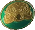
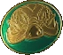
Fireworks
Window Laser Trap
Kindle Pops
Boom Box
Electric Trap
Sentry Turret
Boom Box
N31L
Pick up N31L's Head and Place it on his Body


Complete Challenges until the Meter is Full, then Interact with N31L to send him into the Sky and He'll return with David Hasselhoff who will Kill Zombies
Once Hasselhoff Leaves you can get another Part for N31L
Obtain the Auxillary Battery from one of the following locations:
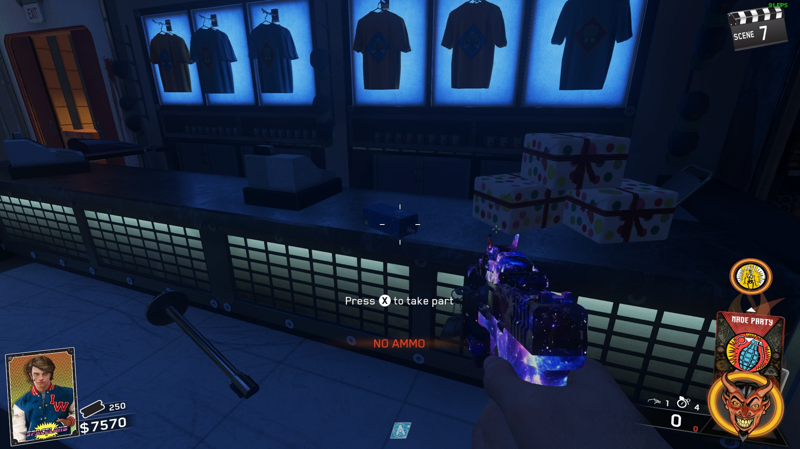
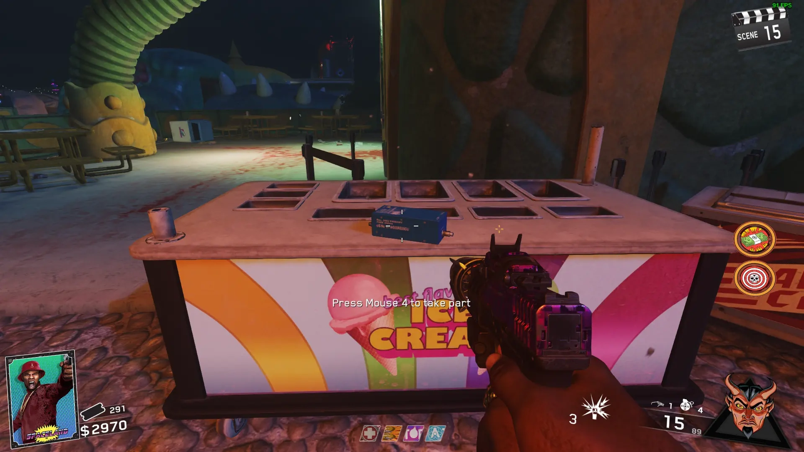 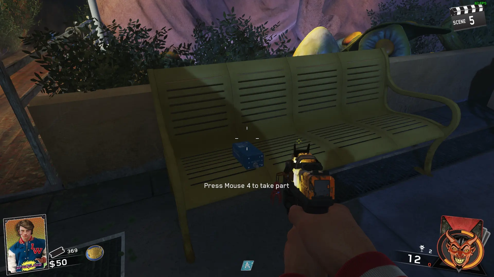
Give the Battery to N31L

Complete Challenges until the Meter is Full, then Interact with N31L to send him into the Sky and He'll return with David Hasselhoff who will Kill Zombies
Once Hasselhoff Leaves you can get another Part for N31L
Obtain the Floppy Disk from one of the following locations:
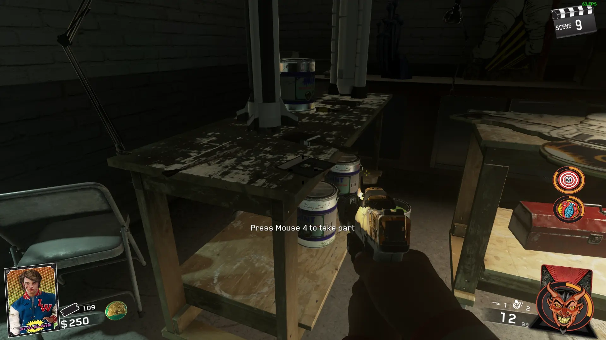
Give the Floppy Disk to N31L
Seti-Com
Obtain the Calculator from one of the following locations:


Obtain the Umbrella from one of the following locations:


Obtain the Boombox from one of the following locations:

Find David Hasselhoff in one of the DJ Booths and Give him the Parts
Wait 1 Round and a Series of 4 notes will Play, then got back to Hasselhoff and Obtain the Seti-Com
Ghost and Skulls
Pop the Ballons in Spawn
ADS at the Letter G on a Sign in Journey into Space
ADS at the Letter H on a Sign
ADS at the Letter O on a Sign
ADS at the Letter S on a Sign
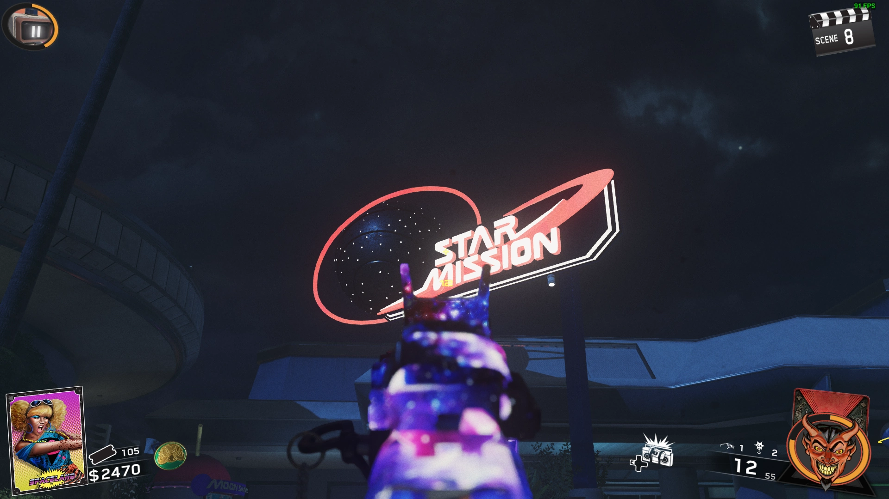
ADS at the Letter T on a Sign in Kepler
Look at the Colors of 1984 on The Ghost and Skulls Screen in Arcade
Get the Number of Kills while Standing on a Specific Color Tile on the Dance Floor in Order
Play Cryptid Attack and Hit the Tooth that has a Skull Above it when it Appears
Play Rings of Saturn and Make 3 Baskets in a Row
Play Black Hole and Make the Ball into the 50 Slot when the Skull is Above it
Play Zombie Zoom and Collect the Skull by making the Zombie Run over it
Play Bowling for Planets and Make the Ball into the Hole with the Skull in it
If you fail these multiple times, you will have to flip the round to try again
Complete the Main Easter Egg
Then Equip the Shades and Look above the PaP Portal and Zap the Skull using the Spaceland Sign Ring that you Destroyed the UFO with
Make the Brute Zap the Ghost and Skulls Machine (If you lose the Game, repeat this)
Interact with the Machine to Play
Zap a Ghost until the Bar at the Bottom is Full, then Shoot it at the Skulls, If 3 Red Skulls Escape into the Portal you Lose
When you Complete it, you will get Perkaholic
Wonder Weapons
Unleash the 4 Space Ships from the PaP Room
Open the Hidden Door in the Alligator's Mouth
-Obtain the Golden Teeth from the Gift Shop in Arcade
-Have a Brutus get Chomped by the Alligator
-Replace the Broken Top Teeth with the Golden Teeth
Head-Cutter
Obtain the Yeti Toy from the Souvenir Machine in Polar Peak
Obtain the Cryo Grenade from the Arcade Gift Shop, throw it at the Yeti outside of the Polar Peak Entrance, the Yeti will start Freezing Zombies in front of it
Kill 10 Frozen Zombies with Headshots, the Yeti will Roar when you have them done
Pick up the Battery from the Yeti in the Polar Peak Gift Shop
Get Kills with the Dragon's Breath Trap in Polar Peak until the Spaceship starts Flying Around Polar Peak
Get Kills under the Spaceship with a Weapon that has an Arcane Core
The Spaceship will drop a Glowing Orb, pick it up to attach it to the Arcane Core
Obtain the Crystal from the Hidden Door in the Alligator's Mouth
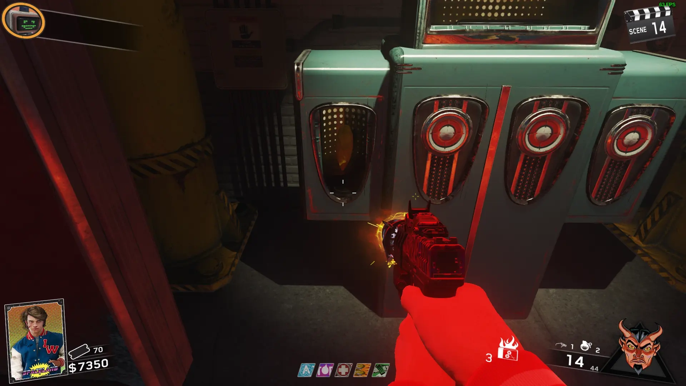
Place the 3 Parts onto the Cardboard Alien in the Polar Peak Gift Shop to build the Head-Cutter
Face-Melter
Obtain the Rocket Ship Toy from the Souvenir Machine in Journey to Space
Activate the Portal in Journey to Space, throw a Frag Grenade into it, then keep picking up and throwing the Grenade that shoots back out into Main Area Portal
Pick up the Battery from the Main Area
Get Kills with Escape Velocity Trap in Journey to Space until the Spaceship starts Flying Around Journey to Space
Get Kills under the Spaceship with a Weapon that has an Arcane Core
The Spaceship will drop a Glowing Orb, pick it up to attach it to the Arcane Core
Obtain the Crystal from the Hidden Door in the Alligator's Mouth
Place the 3 Parts onto the Cardboard Alien in Journey to Space to build the Face-Melter
Dischord
Obtain the Disco Ball from the Souvenir Machine outside of the Arcade
Obtain Glasses from Zombies
Shoot 5 Red Targets around the Map
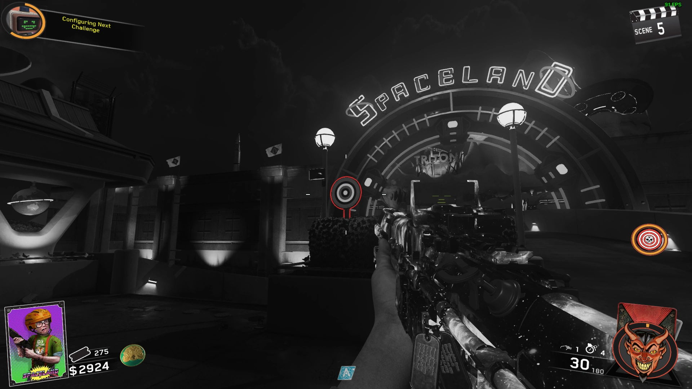 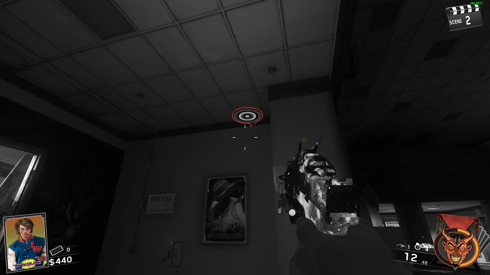 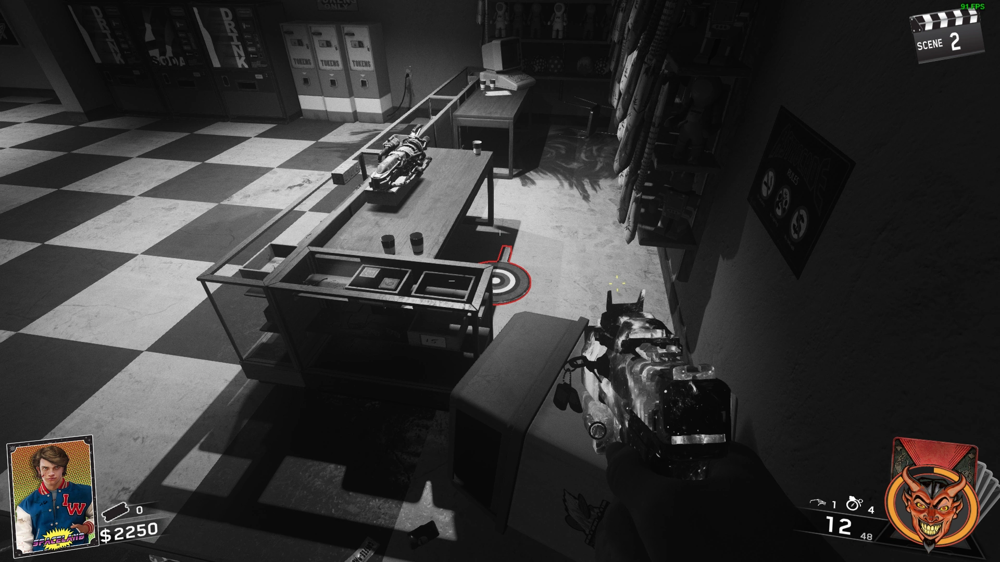
 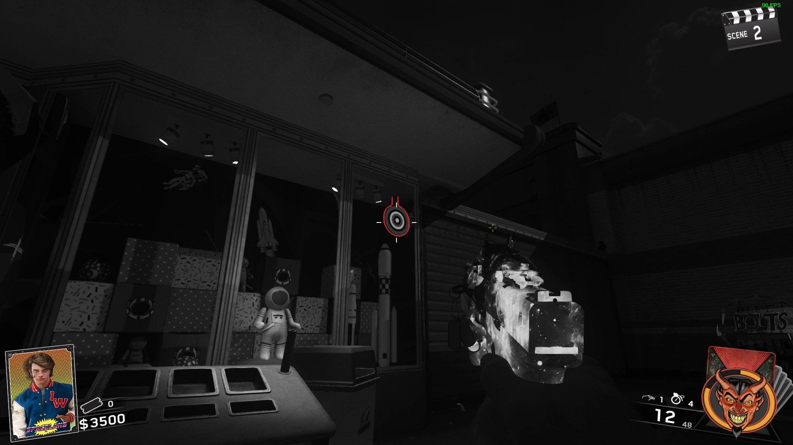
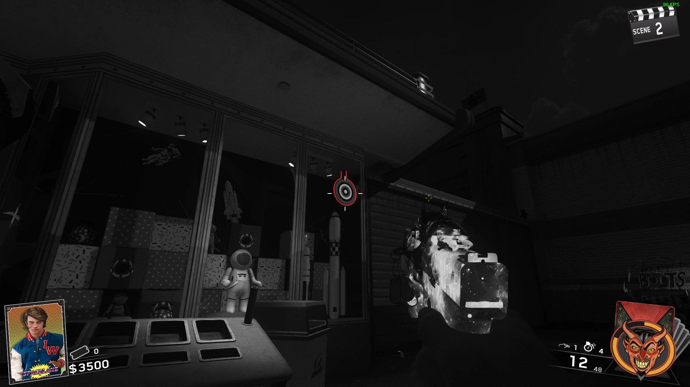Pick up the Battery from Dance Floor in Arcade
Get Kills with Dance Floor Trap in Arcade until the Spaceship starts Flying Around the Arcade
Get Kills under the Spaceship with a Weapon that has an Arcane Core
The Spaceship will drop a Glowing Orb, pick it up to attach it to the Arcane Core
Obtain the Crystal from the Hidden Door in the Alligator's Mouth
Place the 3 Parts onto the Cardboard Alien in the Arcade to build the Dischord
Shredder
Obtain the Alien Toy from the Souvenir Machine by the Portal in Kepler
Shoot the Back of the Boat in the Kelper River
Pick up the Battery from one of the Water Jets that shoot straight up

Get Kills with Chromosphere Trap in Kepler until the Spaceship starts Flying Around Kepler
Get Kills under the Spaceship with a Weapon that has an Arcane Core
The Spaceship will drop a Glowing Orb, pick it up to attach it to the Arcane Core
Obtain the Crystal from the Hidden Door in the Alligator's Mouth
Place the 3 Parts onto the Cardboard Alien in the Basement to build the Shredder
Pack-A-Punch
Activate and Use the 4 Portals Around the Map:


Return to The Center and Enter the Portal

Main Quest
Build the Seti-Com
Place the Seti-Com in one of the Locations around the Map, and Defend it 3 Times

Return to Hasselhoff and Obtain the 4 Radios
Place the 4 Radios on the Gold Plates in the Main Area
The Order you Place them in Specifies their Color
-Yellow
-Blue
-Green
-Red
**PREPARE FOR THE BOSS FIGHT**
Activate one of the Speakers to start Simon Says, then play Simon Says with the Spaceship 3 times to Start the Boss Fight
If you Fail a Brute will Spawn
There will be 1 Alien per Player in the Game
Shoot the Alien with one of the Wonder Weapons to Stun him, run behind him and Melee his Backpack 2 Times, then you can kill him
(The Light on his Neck is a Health Indicator and it is his weak spot)
Once you Defeat The Alien, grab the Nuke, Grab the Fuses by the Main Portal, Install them in the PaP, and Upgrade your Wonder Weapon


Shoot the Blue Rings on the Circular Spaceland Sign to turn them Yellow, shoot the Last one when the UFO is above the Main Portal to Destroy the UFO

Pick up the Soul Key, and the Ending Cutscene will Play

You can Play as Hasselhoff by Entering a Code using the D-Pad in the Lobby Quickly
Left, Right, Left, Up, Down